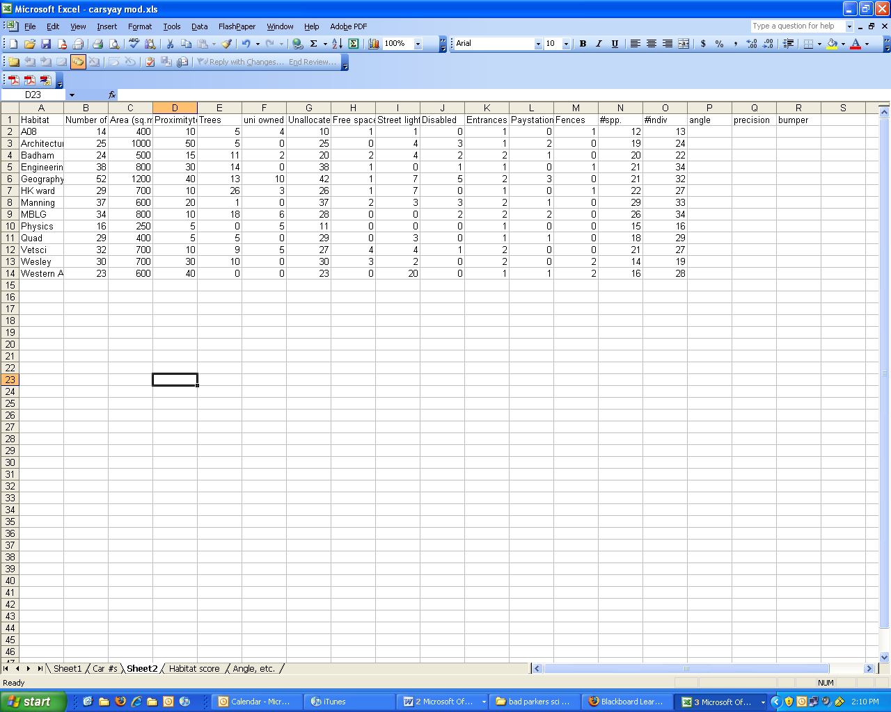
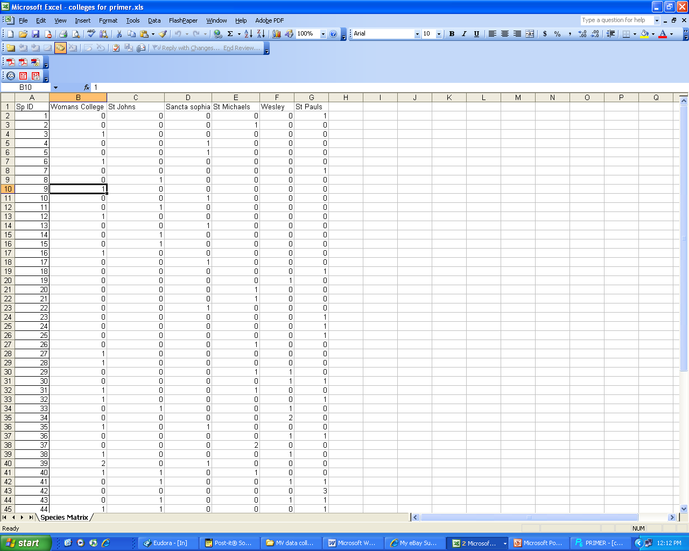

Week 10: Multivariate methods in biology
Module 3 objectives
This module introduces widely used techniques for analysing multivariate biological data. By the end of this module, you will be able to:
- Understand the principles underlying Principal Components Analysis (PCA) and Non-metric Multidimensional Scaling (nMDS)
- Be familiar with the concepts behind multivariate hypothesis testing using permutational techniques such as ANOSIM and PERMANOVA
- Be able to plan and conduct experiments that test multivariate hypotheses
- Know how to carry out these analyses using relevant statistical software
- Be able to interpret, present, and report your findings clearly and effectively
Introduction
For this practical you will:
- Present group presentations of model systems and experimental design.
- Analyse sample ecological data in jamovi using miso to:
- Visualise assemblage structure using cluster analysis and nMDS.
- Test one- and two-factor multivariate hypotheses using ANOSIM and PERMANOVA.
- Assess multivariate dispersion using PERMDISP.
- Determine which variables contribute most to differences among groups using SIMPER.
These analyses are commonly used in ecology to compare species assemblages, visualise differences among groups, and test hypotheses about community composition.
Community and assemblage structure
A typical workflow for analysing community data is:
- Arrange the data with samples in rows and species or other response variables in columns.
- Apply an appropriate transformation to the species abundance data.
- Calculate ecological dissimilarities, usually Bray–Curtis for abundance data.
- Explore patterns using nMDS and/or cluster analysis.
- Test hypotheses using PERMANOVA or, for simple one-factor questions, ANOSIM.
- Use PERMDISP to assess whether groups differ in multivariate dispersion.
- Use SIMPER where appropriate to identify species contributing most to differences among groups.
Using jamovi and miso
In this practical, we will use miso (Multivariate Inference, Similarity and Ordination) to analyse the ant community data in jamovi.
If you have not installed miso yet, follow the installation instructions in the week 9 practical before continuing.
Understand the data
Each row is one sample. The first three columns describe where it came from:
- Site identifies the sampling site.
- Community has five levels.
- Sample is either Edge or Interior.
The remaining 100 columns contain ant abundance data. Keep Site as an identifier, but leave it out of the analyses.
Open the data
- Download AntDataTotal.csv to your computer.
- In jamovi, select ☰ menu → Open → This PC → Browse, find the downloaded file and select Open.
Check the variable types
Before starting the analyses, check that Community and Sample are set to Nominal. If needed, double-click the column heading and change Measure type.
Set the 100 ant abundance variables to Continuous together:
- Select the Variables tab and use the select-all checkbox.
- Deselect Site, Community and Sample.
- Set Measure type → Continuous.
Ant abundance variables
For the miso community analyses, use only the ant abundance variables as the multivariate response data.
In each analysis, place the ant abundance variables into Feature Variables. Do not include Site, Community or Sample. These variables have different roles:
- Site identifies individual sampling locations.
- Community is a grouping factor.
- Sample is a grouping factor distinguishing Edge and Interior samples.
The supplied dataset is already organised with:
- Rows = samples
- Columns = species or taxa
- Additional columns = grouping factors and identifiers
For example:
| Site | Community | Sample | Species_A | Species_B | Species_C |
|---|---|---|---|---|---|
| Site01 | Community1 | Edge | 3 | 0 | 12 |
| Site02 | Community1 | Interior | 1 | 2 | 7 |
| Site03 | Community2 | Edge | 0 | 4 | 2 |
This structure keeps the species abundance data separate from the variables that identify samples and define groups. Use the same structure when preparing your own community dataset.
In the analyses that follow, place all of the ant abundance columns into Feature Variables, while Community and/or Sample will be entered separately as grouping factors.
Transformation settings
Ecological abundance datasets are often dominated by a few very abundant species. Transforming the data reduces the influence of these dominant species and allows moderately abundant and less common species to contribute more to the analysis.
For this exercise, use:
Transformation → Fourth root
You do not need to create a separately transformed dataset. miso applies the selected transformation as part of each analysis.
For your own data, other transformation choices that may be useful include:
- None
- Square root
- Fourth root
- Log(x + 1)
- Presence/absence
For this ant dataset, use the fourth-root transformation throughout the analyses below.
Dissimilarity settings
For these ant abundance data, use:
Dissimilarity index → Bray-Curtis
Bray–Curtis dissimilarity measures differences in species composition and abundance between samples and is widely used for ecological community data.
miso calculates the dissimilarities automatically within each analysis. You therefore only need to specify:
- Feature Variables – the ant abundance variables
- Transformation – Fourth root
- Dissimilarity index – Bray-Curtis
These settings are selected within each analysis, after opening it. They are not separate data-processing steps.
Use these same settings throughout the analyses below unless instructed otherwise.
Analysis sequence for AntDataTotal
Complete the analyses in the following order:
| Step | Analysis | Main settings |
|---|---|---|
| 1 | nMDS | Fourth root; Bray–Curtis; Group = Community |
| 2 | Cluster analysis | Fourth root; Bray–Curtis; Labels = Site |
| 3 | ANOSIM | Community; 999 permutations |
| 4 | PERMANOVA | Community + Sample + Community × Sample; 999 permutations; Marginal terms |
| 5 | PERMDISP | Community; 999 permutations |
| 6 | SIMPER | Community; Fourth root |
This sequence takes you through four stages of multivariate analysis:
Visualise patterns → Test hypotheses → Check dispersion → Identify contributing species
1. nMDS
Create an nMDS ordination
Non-metric multidimensional scaling (nMDS) provides a visual representation of similarities and differences in ant assemblage composition among samples.
Set up the analysis
- Select Analyses → Multivariate → nMDS.
- Move all ant abundance variables into Feature Variables.
- Move Community into Grouping Variable.
- Under Analysis Choices, set:
- Transformation → Fourth root
- Dissimilarity index → Bray-Curtis
- Under Plots, keep the following selected:
- Shepard Diagram
- Group point styling
- Group hulls
- Group dispersion ellipses
- Group spiders
- Set Maximum random starts = 20.
Read the output
In an nMDS plot:
- samples positioned close together have more similar ant assemblages;
- samples positioned far apart have more dissimilar ant assemblages.
Look for:
- separation among Communities;
- overlap among Communities;
- unusual or outlying samples;
- differences in the spread of samples within Communities.
Also examine the stress value. Lower stress indicates that the two-dimensional ordination provides a better representation of the multivariate relationships among samples.
Important: nMDS is primarily a visualisation technique. Do not conclude that Communities are significantly different simply because they appear separated on the plot. Formal tests of differences among Communities are conducted using ANOSIM and PERMANOVA.
2. Cluster analysis
Create a cluster analysis
Cluster analysis provides another way of visualising similarities among samples. Samples with more similar ant assemblages are grouped together in the dendrogram.
Set up the analysis
- Select Analyses → miso → Cluster analysis.
- Move all ant abundance variables into Feature Variables.
- Optional: Move Site into Sample Labels if you want individual samples identified on the dendrogram.
- Under Analysis Choices, set:
- Transformation → Fourth root
- Dissimilarity index → Bray-Curtis.
Read the output
Examine whether samples from the same Community tend to cluster together.
Compare the pattern in the dendrogram with the pattern you observed in the nMDS. The two approaches display the same underlying multivariate relationships in different ways.
3. ANOSIM
Test for differences among Communities using ANOSIM
Analysis of Similarities (ANOSIM) tests whether assemblage composition differs among groups defined by a single factor.
For this analysis, the question is:
Do ant assemblages differ among Communities?
Set up the analysis
- Select Analyses → miso → ANOSIM.
- Move all ant abundance variables into Feature Variables.
- Move Community into Grouping Variable.
- Under Analysis Choices, set:
- Transformation → Fourth root
- Dissimilarity index → Bray-Curtis
- Set Permutations = 999.
- Set Permutation restriction → Free.
- Because Community has more than two levels, select Pairwise ANOSIM comparisons.
- For multiple comparisons, set P-value adjustment → Holm.
Read the output
The two main results are:
- Global R
- P-value
The Global R statistic describes the degree of separation among Communities.
As a general guide:
- values near 0 indicate little separation among groups;
- larger positive values indicate greater separation;
- values approaching 1 indicate strong separation.
Use the P-value to determine whether there is statistical evidence that assemblage composition differs among Communities.
If the overall ANOSIM is significant, examine the pairwise comparisons to determine which Communities differ from one another.
An example of how to report the result is:
ANOSIM indicated that ant assemblage composition differed among Communities (Global R = …, P = …, 999 permutations).
4. PERMANOVA
Test Community and Sample effects using PERMANOVA
Permutational Multivariate Analysis of Variance (PERMANOVA) allows us to test more complex hypotheses involving multiple factors.
For AntDataTotal, we will test:
- Community
- Sample
- Community × Sample
These terms answer three different biological questions:
- Community: Does ant assemblage composition differ among Communities?
- Sample: Does ant assemblage composition differ between Edge and Interior samples?
- Community × Sample: Does the difference between Edge and Interior samples vary among Communities?
Set up the analysis
- Select Analyses → miso → PERMANOVA.
- Move all ant abundance variables into Feature Variables.
- Move Community into Grouping Variable.
- Move Sample into Additional Factors.
- Under Analysis Choices, set:
- Transformation → Fourth root
- Dissimilarity index → Bray-Curtis
- Select Model Interactions. This adds the Community × Sample interaction to the model.
- Set Number of permutations = 999.
- Set Permutation restrictions → Free.
- Select Test type → Marginal terms. This tests each term while accounting for the other terms in the model.
- Select Pairwise comparisons.
- Set P-value adjustment → Holm.
Read the output
Examine the PERMANOVA results for:
- Community
- Sample
- Community × Sample
For each term, examine:
- degrees of freedom (df);
- pseudo-F statistic;
- R² or variance explained, where provided;
- P-value.
Interpret the effects as follows:
- A significant Community effect indicates that ant assemblage composition differs among Communities.
- A significant Sample effect indicates that assemblage composition differs between Edge and Interior samples overall.
- A significant Community × Sample interaction indicates that the difference between Edge and Interior samples varies among Communities.
Important: If the Community × Sample interaction is significant, examine and interpret the interaction before drawing conclusions about the main effects of Community or Sample.
5. PERMDISP
Check multivariate dispersion using PERMDISP
PERMANOVA tests for differences in multivariate assemblage composition. However, groups can also differ in how variable or dispersed their samples are.
PERMDISP tests whether Communities differ in their multivariate dispersion.
Set up the analysis
- Select Analyses → miso → PERMDISP.
- Move all ant abundance variables into Feature Variables.
- Move Community into Grouping Variable.
- Under Analysis Choices, set:
- Transformation → Fourth root
- Dissimilarity index → Bray-Curtis
- Group centre → Median
- Permutations = 999
- Keep Distance-to-centre diagnostic selected.
- Conditional: You may also select Pairwise dispersion comparisons if the overall PERMDISP test is significant.
Read the output
A non-significant PERMDISP result indicates that there is no evidence that the Communities differ in their multivariate dispersion.
A significant PERMDISP result indicates that at least some Communities differ in their multivariate spread.
If PERMDISP is significant, interpret the PERMANOVA result with additional caution and examine the nMDS and distance-to-centre plot to understand the pattern.
6. SIMPER
Identify contributing species using SIMPER
Similarity Percentages (SIMPER) helps identify which species contribute most to the average differences in assemblage composition among Communities.
SIMPER is primarily a descriptive follow-up analysis.
Set up the analysis
- Select Analyses → miso → SIMPER.
- Move all ant abundance variables into Feature Variables.
- Move Community into Grouping Variable.
- Under Transformation, select Fourth root.
- Under Output settings, set:
- Top N features = 10
- Cumulative contribution = 70%
- Contribution plots
- Contrast overview heatmap
- Detailed Statistics.
Read the output
For each pair of Communities, identify the species that make the largest contributions to the average Bray–Curtis dissimilarity.
Species with larger contributions are more important in explaining the observed compositional difference between those two Communities.
Important: SIMPER is descriptive. A high SIMPER contribution does not demonstrate that an individual species differs significantly between Communities.
Prepare your own assemblage or community data
For your own community dataset, organise your spreadsheet so that:
- Rows = sampling units or sites
- Columns = species or taxa
- Additional columns = factors and identifiers
For example:
| Site | Community | Sample | Species_A | Species_B | Species_C |
|---|---|---|---|---|---|
| Site01 | Community1 | Edge | 3 | 0 | 12 |
| Site02 | Community1 | Interior | 1 | 2 | 7 |
| Site03 | Community2 | Edge | 0 | 4 | 2 |
Each species abundance column should contain numbers only.
Use 0 where a species was genuinely absent from a surveyed sample.
Do not use 0 to represent missing data or a sample that was not surveyed.
Remove species that are absent from every sample.
Avoid:
- merged cells;
- multiple header rows;
- totals or subtotals within the community matrix;
- text entries within abundance columns.
When the file is opened in jamovi, check that:
- grouping variables such as Community and Sample are set to Nominal;
- species abundance variables are set to Continuous.
Prepare data for next week’s practical
By the start of next week’s practical, each group must have three spreadsheets prepared. These will be checked and marked out of 5 by your demonstrators.
Habitat data file
Prepare the habitat data for analysis in jamovi or R.
Your spreadsheet should have:
- Rows = sites
- Columns = habitat variables
Also include:
- a Site column;
- a Community column if relevant;
- clear and meaningful variable names;
- consistent measurement units.
Before the practical, check the dataset carefully for missing values.
Habitat variables that will be used in PCA should be numeric.
Assemblage / community data file
Prepare the community data for analysis in jamovi/miso or R.
Your spreadsheet should have:
- Rows = sampling units or sites
- Columns = species or taxa
Also include:
- a Site identifier;
- a Community column;
- any other relevant grouping factors, such as Sample;
- numeric abundance or presence/absence values.
Before the practical:
- remove taxa that are absent from all samples;
- check that abundance columns contain numbers only;
- check that Community, Sample, and other grouping factors are recognised as Nominal variables in jamovi;
- check that species abundance variables are recognised as Continuous.
Summary statistics file
Prepare a separate spreadsheet containing useful summary variables.
These may include:
- number of species per site;
- total abundance per site;
- mean or median habitat variables;
- other summary measures relevant to your research question.
These summaries can be calculated for individual sites or grouped by variables such as:
- Community;
- Sample;
- another biologically relevant grouping variable.
Important note about transformations
miso allows multivariate analyses to be run on untransformed data. However, ecological abundance datasets are often strongly influenced by a small number of highly abundant taxa.
A transformation can reduce the influence of dominant species and allow moderately abundant and less common species to contribute more to the multivariate pattern.
For this practical, use:
Transformation → Fourth root
The fourth-root transformation reduces the influence of very abundant species while still retaining information about differences in abundance among samples.
For your own datasets, the most appropriate transformation will depend on your biological question and the structure of your data. You may therefore compare alternatives such as:
- None
- Square root
- Fourth root
- Log(x + 1)
- Presence/absence
When comparing transformations, consider whether the biological interpretation of the results changes and which transformation best reflects the question you are trying to answer.
Example data sheets

